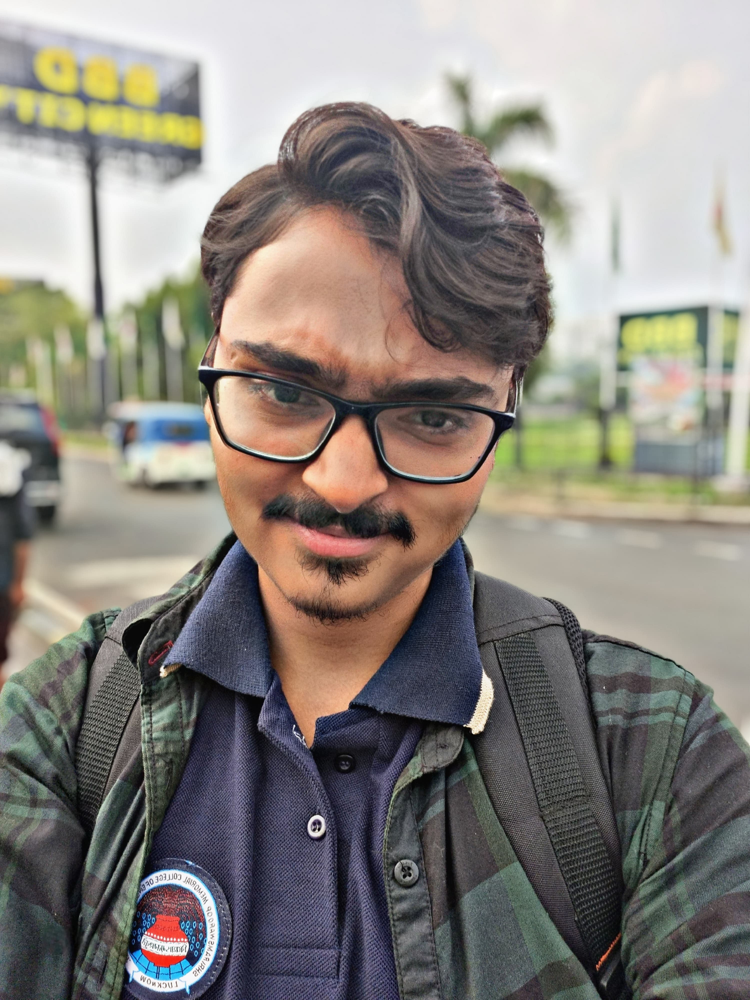

Mudit Srivastava
üìç Indira Nagar, Lucknow, Uttar Pradesh
üìß muditsrikap000@gmail.com
üîó LinkedIn: mudit-s-99b081295
About Me
I am currently pursuing B.Tech in Computer Science at Shri Ramswaroop Memorial College. Motivated final-year B.Tech student with strong skills in Python, UI/UX, and Web Development. Seeking an entry-level role to apply and expand technical and creative expertise.
Education
- B.Tech (Computer Science), SRMCEM, Lucknow
- 11th - 12th, Rani Laxmi Bai Memorial School (2021–2022)
- 4th - 10th, Vidya Bhawan Public School, Bareilly (2014–2020)
- 2nd - 4th, Wood Row Senior Secondary School, Bareilly
Experience
- Campus Ambassador - Wipro
- Campus Ambassador - Corizo
- Assistant Coordinator - WIWA SRMCEM
- Assistant Coordinator - CSI SRMCEM
- Assistant Coordinator - Grobots Club
Certifications
- Data Science Tools – IBM
- Cloud Computing Fundamentals – IBM SkillBuild
- Graphic Designing Internship – Corizo
- Certificate of Excellence – Gantavya SRMCEM
Projects
- Rolling Dice App – Android Studio project for generating random dice numbers.
- Waste2Decor – UI design for an app to connect waste sellers and buyers.
- Feed the Snake – Snake game using HTML, CSS, JavaScript with animation and collision logic.
Leadership & Volunteering
- Assistant Coordinator – WIWA SRMCEM Annual Fest
- Participation in GDG on Campus (Android App Seminar)
Skills
- Canva, Figma
- Python (Intermediate), Web Development, UI/UX
- HTML, CSS, JavaScript
Awards
- Zephyre – CSI SRMCEM
- Idea Fest – IEEE SRMCEM